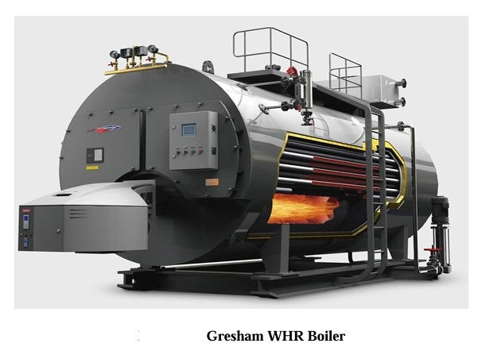

Role Overview
As part of a group internship at Artistic Milliners Unit 4 (AM-4), one of Pakistan's largest integrated textile manufacturers, I spent four weeks embedded within the Utilities Department — the backbone of the entire facility's mechanical and electrical infrastructure. The internship provided hands-on exposure to the systems that keep a large-scale industrial plant running continuously, including power generation, steam production, cooling, and HVAC.
Artistic Milliners operates multiple processing units across Karachi, covering garment manufacturing, denim processing, and yarn spinning. The Utilities Department at AM-4 manages power supply, water treatment, steam generation, compressed air distribution, and environmental systems — all of which I observed and studied in operation.

HVAC & Chiller Systems
A major focus of the internship was understanding how large-scale HVAC systems are operated and maintained in an industrial textile environment. The facility uses chilled water generated by both absorption chillers and York compression chillers, which is then distributed through Air Handling Units (AHUs), Fan Coil Units (FCUs), and Fresh Air Handling Units (FAHUs) to maintain temperature and air quality across production floors.
I gained first-hand understanding of how absorption chillers operate without a compressor, using heat to drive the cooling cycle through a lithium bromide and water working pair. This included observing the generator, condenser, evaporator, and absorber stages, along with the associated pump systems — hot water pumps, refrigerant pumps, solution pumps, and condenser pumps — that maintain continuous flow through the cycle.

Boilers & Steam Generation
The facility's steam generation infrastructure was one of the most technically rich areas of the internship. I studied the operation of fire tube boilers used for primary steam supply, observing feed water treatment, steam pressure regulation, blowdown procedures, and safety valve operation. The plant also runs Waste Heat Recovery Boilers (WHRBs) connected directly to the gas engines, capturing exhaust heat and converting it into usable steam — improving overall energy efficiency significantly.
Additionally, I was exposed to a biomass boiler system that burns wood to generate heat, providing a sustainable supplementary steam source. Working through Process Flow Diagrams (PFDs) and Piping and Instrumentation Diagrams (P&IDs) for the boiler systems helped solidify my understanding of how these industrial processes are documented and monitored.

Power Generation & MV Room
The facility operates a Tri-Generation Power Plant — simultaneously producing electricity, heat, and cooling from a single energy source. The power house is equipped with JENBACHER gas engines which drive the on-site generation capacity, supplemented by a rooftop solar installation and grid supply from K-Electric. I studied the operational logic behind balancing these three sources to optimise cost and reliability.
Inside the Medium Voltage (MV) Room, I observed the switchgear, transformers, and circuit breaker panels that control power distribution across the plant. Key electrical components including vacuum circuit breakers, air circuit breakers, automatic voltage regulators, and LT synchronisation couplers were explained in the context of maintaining stable 50 Hz distribution across the facility. Safety protocols and PPE requirements in the power house were also covered.

Maintenance & Reliability
A dedicated portion of the internship introduced industrial maintenance methodologies as applied in a real production environment. I was exposed to Root Cause Analysis (RCA) for identifying the underlying causes of equipment failures, and Reliability Centered Maintenance (RCM) for designing maintenance strategies around the functional requirements of each system rather than time-based schedules alone.
The Bathtub Curve model — covering the infant mortality, useful life, and wear-out phases of equipment — was studied in the context of the plant's actual machinery lifecycle. Reliability, Availability, and Maintainability (RAM) analysis frameworks, including MTBF and MTTR calculations, were observed in use by the Utilities team for scheduling preventive maintenance and managing spare parts inventory.


Additional Exposure
Beyond the primary systems, the internship covered several other areas within the Utilities Department. I observed the denim washing and finishing systems, understanding how water is managed, treated, and recycled through the production process. Water treatment and softening plants, compressed air distribution networks, and effluent treatment processes were also part of the tour.
Exposure to industrial control panels, motor control centres, and plant-wide instrumentation gave a broader picture of how large facilities integrate mechanical and electrical systems under a unified operations framework. The internship reinforced how energy management — balancing gas, solar, and grid sources — directly impacts operational cost in a facility where energy constitutes a significant portion of total running expenses.